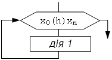
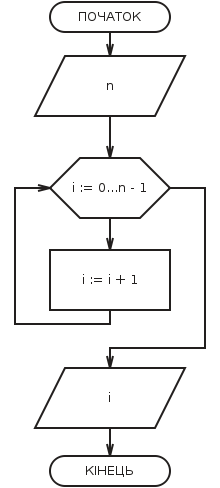

Цикл з параметром, або цикл з лічильником, або арифметичний цикл - це цикл с зарання відомою кількістю повторів.
В блоці модификації вказується закон зміни параметру.

Xo - початкове значення параметру;
h - крок зміни параметру;
Xn - останнє значення параметру.
Для створення циклів з параметром необхідно використовувати правила:
1. Параметр циклу, його початкове та кінцеве значення, а також крок повинні бути одного типу;
2. Заборонено змінювати в тілі циклу початкове, поточне або кінцеве значення параметру;
3. Заборонено входити в цикл оминаючи блок модифікації;
4. Якщо початкове значення більше кінцевого, то крок - число від'ємне;
5. Післе виходу з циклу значення параметру невизначене та не може використовуватися в подальших обчисленнях;
6. З циклу можна вийти не закончивши його, тоді параметр зберігає своє останнє значення.
Підрахунок кількості (малюнок з додатку):
